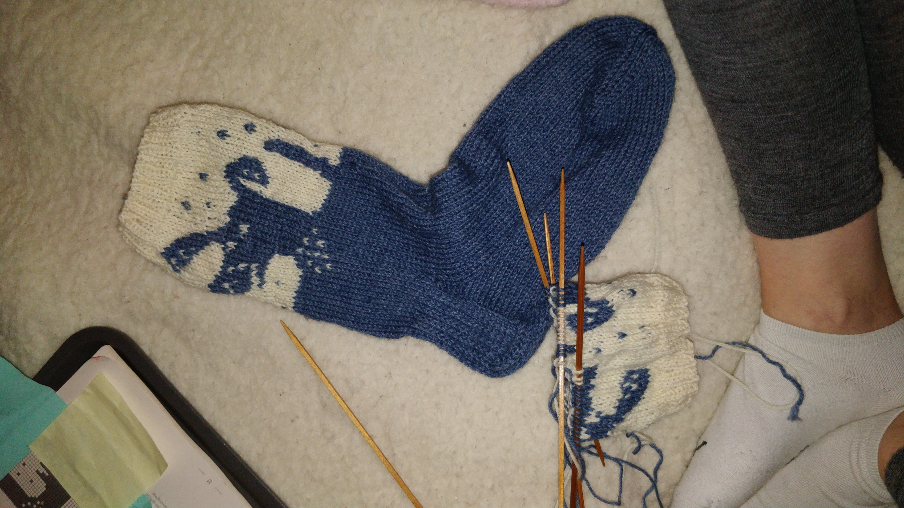

Harrastukset
Ulkoilu ja valokuvaaminen
Vapaa-ajalla tykkään viettää aikaa luonnossa seikkaillen ja luonnon kauneudesta nauttien.
Valokuvaamista harrastan täysin omaksi ilokseni. Kuvat ovat pääosin luontoon liittyviä tai kuvia lemmikeistäni. Viihdyn myös kameran toisella puolella, kuvauskohteena.


Leivonta
Tässä muutamia luomuksiani. Olen tehnyt kakkuja sekä omiin tarpeisiin, että myös tilauksesta.
Minulta luonnistuvat sekä makeat että suolaiset kakut, piirakat ja muut leipomukset. Kakkuja on tehty niin ylioppilasjuhliin kuin tavallista arkea piristämään.
Klikkaa kuvia suurentaaksesi niitä ja avataksesi kuvagallerian.

{kind=link}


{kind=link}


{kind=link}

{kind=link}
Käsityöt
Viimeistään syksyllä iskee käsityöbuumi. Silloin alkaa puikot heilua ja sukkia valmistuu.
Mieluiten neulon villasukkia, mutta myös virkkaaminen on viime vuosien aikana noussut mieluisaksi puuhaksi.
Vuosien varrella olen neulonut monta sukka- ja lapasparia, pipoja ja kaulaliinoja. Tavoitteena olisi joku päivä aloittaa isompi projekti villapaidan neulomisesta.
Tällä hetkellä suurin projektini on ollut päiväpeiton virkkaaminen isoäidin neliöistä. Kyseinen projekti on vielä vaiheessa, mutta valmistuu pikkuhiljaa.
Klikkaamalla kuvia voit avata kuvagallerian.

{kind=link}
{kind=link}
{kind=link}


Tanssi
Monien vuosien haaveilun jälkeen uskalsin vihdoin vuonna 2024 lähteä ensimmäiselle tanssitunnille. Pian tajusin tehneeni erittäin hyvän päätöksen, enkä tästä harrastuksesta tahdo enää luopua.
Nykyään tanssiharrastukseni kohdistuu paritansseihin ja lavatanssit ovat olleet kesän 2025 hitti. Jos joku pyytää mukaan tanssimaan, on siitä lähes mahdotonta kieltäytyä.
Kuntosali
Kuntosalilla olen käynyt säännöllisen epäsäännöllisesti seitsemän vuoden ajan. Harrastuksessa parasta on monipuolisuus ja kehittymisen seuraaminen.
Käytyäni Suomen Urheiluopistossa muiden opintojen ohessa personal trainer -koulutuksen, aloin myös valmentamaan asiakkaita omalla toiminimellä.
Musiikki
Musiikki on aina ollut iso osa elämääni. Olen käynyt pianotunneilla nuorempana 10 vuoden ajan. 7 vuoden tauon jälkeen palasin takaisin pianon ääreen ja sille tielle olen onnekseni jäänyt. Lisäinnostuksena matkaan on tarttunut sekä kitara että haitari. Myös laulaminen on tullut vuosi vuodelta isommin mukaan kuvioihin.
Aikaisemmat harrastukset
Lajitaustaa minulta löytyy telinevoimistelusta. Aloitin telinevoimistelun harrastamisen 6-vuotiaana ja lopetin noin 18-vuotiaana.
Vapaa-ajalla liikunnan ja musiikin lisäksi tykkään tehdä käsitöitä ja leipoa. Galleriasta löytyykin muutamia taidonnäytteitä vuosien varrelta.
Ryhmäliikuntatunneilla olen käynyt vuodesta 2015 lähtien. Parasta ryhmäliikunnassa on ryhmähenki, joka kannustaa ja motivoi jokaista tekemään parhaansa ja ylittämään itsensä.
Olen itsekin ohjannut ryhmäliikuntatunteja. Erityisesti kiertoharjoittelutuntini ja muutamat ohjaamani latinobic-tunnit ovat olleet todella suosittuja.